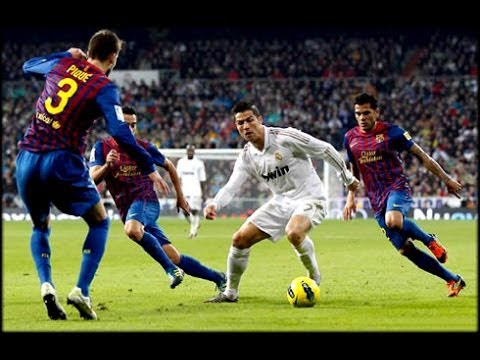

Dribbling is the foundational art of maintaining close, dynamic possession of the football while moving across the pitch, serving as a player's primary tool for bypassing defenders and destabilising defensive structures. At its core, elite dribbling relies on high-frequency, micro-touches using various surfaces of the boot—predominantly the outside (lateral) edge for maintaining top speed in linear sprints, and the inside (medial) edge or sole for sharp, sudden cuts. Biomechanically, effective dribblers maintain a low centre of gravity by keeping their knees bent and staying light on their toes, which grants them the explosive agility required to accelerate or change direction in a fraction of a second. To deceive opponents, players employ sophisticated psychological and physical triggers, such as body feints, step-overs, and sudden alterations in tempo, which force defenders to commit their weight in the wrong direction. Tactically, a successful dribble is a powerful catalyst for a team's offense; by successfully beating an opponent in a one-on-one duel, the attacker collapses the defensive line, forces secondary defenders to abandon their designated marking zones to cover the breach, and opens up critical passing lanes or shooting opportunities in the final third of the field.
